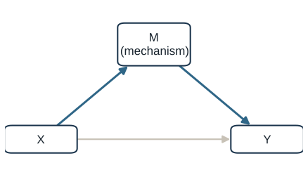
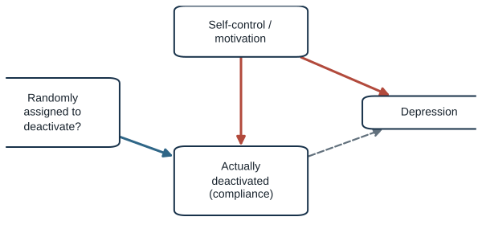
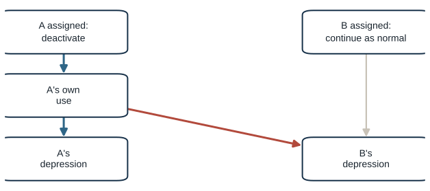
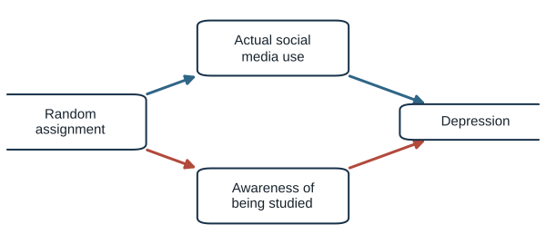
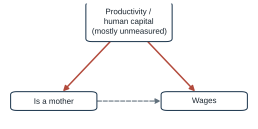
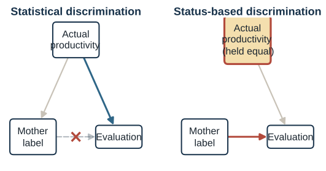
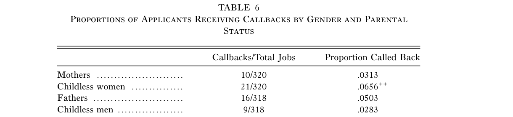
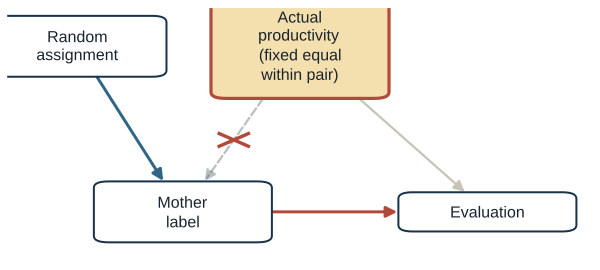
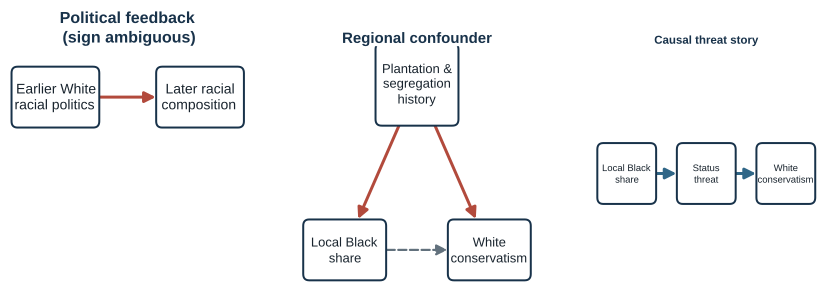

Experiments, from DAGs to Design
Closing the back door by design
Questions for today
| Part | Question |
|---|---|
| 1 · DAG recap + practice | Can you still find a back door and decide what to control for? |
| 2 · Druckman: what makes something an experiment | What exactly does randomization buy you, and what doesn’t it buy you? |
| 3 · Correll, Benard & Paik | How do you experimentally rule out “mothers are just less productive”? |
| 4 · Craig & Richeson | How do you experimentally manipulate a proposed mechanism, not just measure it? |
| 5 · Synthesis | What did randomization close in each case, and what’s still open? |
Running example: does a selective college pay off?
People who attend more selective colleges tend to earn more as adults.
Open or closed? Through family SES and ability
Click Family SES & ability to control for it. Then press Play.
Selection can create a relationship
Imagine an earnings survey recruits from the union of two lists:
- a selective-college alumni directory — any income
- a high-income professional directory — any college
Everyone on either list enters the dataset. People on neither list do not.
Open or closed? Analyzing only the recruited sample
Click Included in dataset to analyze only recruited people. Then press Play.
The numbers make the collider visible
Suppose the full population has 25 people in every cell, but inclusion requires selective college OR high income:
| High income | Lower income | |
|---|---|---|
| Selective college | 25 included | 25 included |
| Nonselective college | 25 included | 0 included |
Among included people, 50% of selective-college graduates have high incomes—but 100% of nonselective-college graduates do.
Conditioning on inclusion makes two otherwise independent variables statistically informative about each other.
If the effect is real, what carries it?
Maybe attending a selective college builds a stronger professional network — connections, recruiting pipelines, alumni — and that network is what actually pays off.
Open or closed? Through professional network
Click Professional network to control for it. Then press Play.
The same three nodes can play different roles
| Structure | Our example | Open by default? | Controlling for the middle… |
|---|---|---|---|
| Fork | Selective college ← family SES & ability → income | yes (non-causal) | removes the bias |
| Inverted fork | Selective college → included in dataset ← income | no | creates bias: collider bias |
| Chain | Selective college → professional network → income | yes (causal) | blocks part of the real effect: overcontrol |
Confounders: control for them. Mediators and colliders: usually don’t.
Source: Rohrer (2018), p. 30.
A mediator explains how an effect travels

- Total effect: every causal path from X to Y
- Indirect effect: the part that travels through M
- Direct effect: what remains outside M
If you want the total effect, do not control away the mediator.
The effect may differ across groups
Example hypothesis: the effect of attending a selective college on adult income depends on family SES before college.
Lower pre-college SES
Selective college may add networks, advising, and recruiting access that were otherwise scarce.
Larger effect
vs.
Higher pre-college SES
Similar networks and opportunities may already be available outside college.
Smaller effect
SES is not the mechanism on the path—it changes the strength of the college → income effect.
The same variable can be both a confounder and a moderator.
A back door begins by pointing into the treatment
A back-door path starts with an arrow into the treatment and ends at the outcome.
- Block every back-door path by controlling for a non-collider on it.
- When estimating the total effect, do not control for variables caused by the treatment.
If the DAG is right and every back door is blocked, the effect is identified — even with observational data.
Source: Rohrer (2018), p. 31 (Pearl’s back-door criterion); Week 10 recap.
One DAG can contain all three structures
All three stories can be true at once. Get the control set exactly right, then press Play.
What if we prevent confounding before it starts?
Every strategy for closing an open back door so far assumed you could find and measure the confounder.
What if you can’t?
Design can close paths before analysis
Instead of measuring every confounder, choose a design that breaks or blocks the back-door path by construction.
- Identical twins. Within twin pairs, many associations with shared genes and family background disappear.
- Adoption cuts the arrow from the parent’s genes to the child’s.
- Lotteries and natural experiments. The Preuss lottery; TV’s arrival; the Buenos Aires guards.
Source: Rohrer (2018), p. 34; Week 10 recap.
Experiments close paths by design
Part 2 of 5 · Druckman: what makes something an experiment
You cannot observe the same unit both treated and untreated at once.
We never observe both outcomes for the same unit
For one student:
| Potential outcome | Meaning | Can we observe it? |
|---|---|---|
| \(Y_1\) | Adult income if they attend a selective college | Yes, if they attend |
| \(Y_0\) | Adult income if they do not attend | Yes, if they do not |
We observe one row. The other is the missing counterfactual.
Every causal claim compares a world we saw with a world we did not.
Source: Druckman (2023), pp. 26–28, following Holland (1986).
Two ways to construct the missing comparison
Scientific solution
Assume unit homogeneity: two units (or one unit at two times) are identical in every way that matters, except treatment.
vs.
Statistical solution
Randomly assign treatment across many units; let randomization balance everything else on average.
Why “scientific”? It’s the move chemistry and physics make: assume this beaker is the same as that beaker.
Source: Druckman (2023), pp. 28–30.
An intervention is what makes a study an experiment
A study where an intervention provides the primary procedure by which a researcher resolves the Fundamental Problem of Causal Inference.
Broader than “random assignment required.”
Source: Druckman (2023), p. 32.
Four ways an intervention can create a comparison
| Source of intervention | Statistical solution | Scientific solution |
|---|---|---|
| Researcher-caused | Randomized lab, survey, or field experiment | Within-person or tightly matched comparison |
| Naturally occurring | A real lottery or genuinely random rollout | An “as-if comparable” natural experiment |
Most studies today are researcher-caused statistical experiments. “Natural” does not automatically mean randomized.
Source: Druckman (2023), Table 2.3, p. 33.
Randomization solves one problem, not every problem
| Assumption | What it requires | Example violation |
|---|---|---|
| Independence | Original assignment is unrelated to potential outcomes | Comparing actual compliers with noncompliers reintroduces self-selection |
| SUTVA | No spillovers; one well-defined version of treatment | Treated friends change control participants’ outcomes |
| Exclusion restriction | When assignment instruments receipt, it has no other route to the outcome | Assignment reveals the hypothesis and changes reporting directly |
Random assignment guarantees independence by construction. It guarantees nothing about SUTVA or exclusion.
Source: Druckman (2023), pp. 30–32; Cox (1958); Rubin (1980), on SUTVA.
Independence: when compliance reintroduces a confound

The assignment was random. The thing people actually did with it wasn’t.
Source: Druckman (2023), pp. 30–31.
SUTVA: when units interfere with each other

A told B about the study. Now B’s outcome depends on A’s assignment too.
Source: Rubin (1980); Druckman (2023), pp. 31–32.
Exclusion restriction: when assignment leaks another way

Being assigned to a condition changed something other than the treatment itself.
Source: Druckman (2023), pp. 31–32; standard in the instrumental-variables literature.
Assignment, sampling, and sample size solve different problems
Random assignment
Supports internal causal inference by making groups comparable in expectation.
Random sampling or population coverage
Supports generalization to a target population.
Larger samples
Reduce chance imbalance and improve precision.
None substitutes for the others. A randomized convenience sample can be internally valid but hard to generalize.
Lab, survey, and field describe where treatment happens
Classified by where the intervention happens — independent of the statistical/scientific distinction.
- Lab — Correll Study 1 (fictitious applicants, paid undergraduates)
- Field — Correll Study 2 (real résumés, real employers)
- Survey — Craig & Richeson Studies 1–3b (press-release vignettes embedded in surveys)
Source: Druckman (2023), pp. 33–35.
Experiments can test effects, mechanisms, or policies
Searching for facts
Isolate the cause of an observed regularity. The modal social-science goal.
Speaking to theorists
Test a formal or game-theoretic prediction.
Whispering in the ears of princes
Get the precise size of an effect right, because someone will act on the number.
Only the third goal requires the effect size, not just its existence, to travel.
Source: Roth (1995), via Druckman (2023), pp. 42–43.
An artificial setting can still test a theory well
Mundane realism
Does the study look like real life?
vs.
Experimental realism
Do participants take it seriously and engage with it?
For mechanism tests, experimental realism is often enough. Policy forecasts also need realistic dosage and context.
Source: Druckman (2023), pp. 52–53; Mook (1983); Plott (1991).
Did the treatment move the intended construct?
Before interpreting an effect, ask:
- Did participants notice and understand the treatment?
- Did it move the intended construct?
- Did it accidentally move another construct too?
A successful manipulation check supports construct validity; it does not prove the entire causal mechanism.
Source: Druckman (2023), pp. 54–56; Kane and Barabas (2019).
Every experiment must answer four validity questions
| Validity | Student-facing question |
|---|---|
| Statistical conclusion | Is the estimated relationship distinguishable from noise, with appropriate uncertainty? |
| Internal | Did the treatment cause the outcome in this study? |
| Construct | Did the treatment and measures capture the concepts in the theory? |
| External | To which people, settings, treatments, outcomes, and times does the effect travel? |
Source: Druckman (2023), Table 3.1, p. 60.
External validity depends on where effects differ
Week 9 gave you the tools: M-STOUT (mechanisms, settings, treatments, outcomes, units, time) and the WEIRD critique.
Druckman adds one sharper claim on top of M-STOUT’s units/settings axes.
Generalization requires coverage of relevant moderators
| Scenario | What can we conclude? |
|---|---|
| Effect is homogeneous across the target population | An internally valid estimate can travel if treatment and measurement mean the same thing |
| Effect is heterogeneous, with adequate moderator coverage | Estimate conditional effects, then transport or reweight to the target population |
| The sample lacks overlap on a relevant moderator | The target effect is not identified without stronger assumptions or new data |
Critics should name a plausible moderator; researchers still must show coverage and explain how the effect is transported.
Source: Druckman and Kam (2011), p. 50; Druckman (2023), pp. 70–74.
Two papers use randomization in different ways
Theory → naive DAG → you design the study → design critique → findings through the DAG → what’s still open.
Correll, Benard & Paik — the motherhood penalty
Part 3 of 5 · Is there a motherhood penalty?
Mothers earn about 5% less per child than otherwise comparable childless women.
Parenthood and wages are associated, but why?
The motherhood wage penalty is well documented, even after controlling for human capital and occupation (Budig and England 2001).
For women under 35, the mother/non-mother gap is larger than the male/female gap.
Source: Budig and England (2001); Crittenden (2001).
The experiment tests a narrower causal effect
Observational puzzle
What is the total effect of becoming a mother on earnings?
≠
Experimental question
What is the effect of a motherhood signal on how an otherwise identical applicant is evaluated?
The experiment identifies discrimination in evaluation—not every pathway from parenthood to wages.
What could produce the motherhood penalty?
Motherhood ⟶ ? ⟶ Wages
Add at least one of each:
- A pre-treatment confounder
- A post-treatment mediator
- An employer-evaluation pathway
Productivity is the central rival explanation

What would you need to control for? Why is that hard here?
Motherhood may change the standard used to judge competence
A status characteristic carries culturally shared beliefs linking one category to greater competence than another.
Double-standard proposition: mothers need more evidence — a higher test score, fewer allowed lapses — before being judged hirable.
Source: Berger et al. (1977); Foschi (1989, 1996); Correll, Benard, and Paik (2007), pp. 1301–1302.
Equal résumés separate two explanations

- Statistical discrimination: use a group average when individual information is incomplete.
- Status-based discrimination: the label changes the standard used to interpret identical information.
Which hypothesis is this design built to distinguish?
Source: Correll, Benard, and Paik (2007), pp. 1301–1302, n. 2; Phelps (1972); Arrow (1973).
How would you isolate discrimination?
You can’t randomly assign real women to become mothers. How would you test whether this is status-based, not just statistical, discrimination?
Study 1: what varied within and between participants?
Within each participant’s pair
- Two applicants of the same gender and race
- About seven years of experience
- Pretested, equivalent résumé quality
- The same high-level marketing position
- One parent and one nonparent
Between participants
- Random assignment to one pair type: Black men, Black women, White men, or White women
- Parent cue counterbalanced across the two résumé templates
- Parent/nonparent presentation order counterbalanced
Parental status varied within participants; applicant gender and race varied between participants.
Source: Correll, Benard, and Paik (2007), pp. 1303–1311.
Study 1: what did participants actually do?
188 paid undergraduates each evaluated two applicant files for a purportedly real $135,000–$180,000 marketing job.
Beliefs
Competence and commitment
Standards
Required exam percentile and tolerated lateness
Decisions
Salary, training, promotion, and hire recommendation
The design tests not only whether mothers are rated lower, but whether they must clear a higher bar.
Source: Correll, Benard, and Paik (2007), pp. 1307–1313.
The experiment identifies a cue effect, not the total wage penalty
It identifies
The causal effect of a parent cue on evaluation when documented qualifications are held equal.
but
It does not identify
The total effect of having children on lifetime wages or every reason employers may react to the cue.
What could this design still get wrong?
What’s a legitimate objection to this design — before you know what it found?
- Undergraduates are not hiring managers.
- One unusually high-paying marketing job may not represent other occupations.
- The paired comparison deliberately makes parental status highly salient.
- The design identifies a cue effect, not the total effect of parenthood on wages.
Study 1: the mother cue changed beliefs, standards, and decisions
| Outcome | Mothers | Childless women | What it means |
|---|---|---|---|
| Competence rating | 5.19 | 5.75 | Identical records, lower perceived competence |
| Exam percentile required | 72.4 | 67.9 | Mothers had to clear a higher bar |
| Recommended salary | $137K | $148K | An $11K penalty |
| Recommended for hire | 46.8% | 84.0% | Nearly a two-to-one gap |
Fathers were not penalized and sometimes received a premium.
Source: Correll, Benard, and Paik (2007), Table 1, p. 1316.
Measured mediation suggests a mechanism but does not identify it
Competence and commitment ratings mediate 31–46% of the effect, depending on the outcome.
This mediator was measured, not manipulated — suggestive, not fully causal, by Rohrer’s own rule.
Source: Correll, Benard, and Paik (2007), pp. 1326–1327; Clogg, Petkova, and Haritou (1995).
The lab result leaves a real-world question
Study 1 already identified the effect. Why does Study 2 exist?
An audit moves the same comparison into real hiring
An audit study sends matched fictitious applications to real decision-makers and compares their behavior.
- 1,276 applications to 638 employers over 18 months
- Entry- and mid-level marketing and business jobs
- One matched parent/nonparent pair per opening, submitted one day apart
- Parent signal: elementary-school PTA officer + “relocating with my family”
- Outcome: an invitation to interview by phone or email
The lab measured the mechanism; the audit measured consequential behavior.
Source: Correll, Benard, and Paik (2007), pp. 1327–1331.
Real employers called back mothers less often

Table 6 (Correll, Benard, and Paik 2007) — callback rates by gender and parental status, field audit study.
Mothers: 10/320 (3.13%) · Childless women: 21/320 (6.56%)
Source: Correll, Benard, and Paik (2007), Table 6, p. 1331.
The field study gains realism but loses the mechanism
The audit shows unequal callbacks. It cannot show:
- Why real employers reacted differently
- Whether the mechanism generalizes beyond these occupations and cues
- What explains the lab’s residual 54–69% not mediated by competence or commitment
- Whether later promotion and pay decisions follow the same pattern
Randomization severs the productivity path

In pairs: mark which path is now severed.
Random assignment severs the path from applicants’ actual qualifications into the assigned parent cue.
Correll shows what a well-chosen manipulation can isolate
Correll closed one back door by randomizing the parental-status signal.
Craig & Richeson go one step further: experimentally manipulating the proposed mediator.
Craig & Richeson — majority-minority status threat
Part 4 of 5 · Does the racial shift push Whites right?
More local Black population share predicts more White Republican registration.
Demographic change correlates with conservatism, but why?
Giles and Hertz (1994): Louisiana parish data, more local Black population share predicts more White Republican registration.
Majority-minority means no single racial or ethnic group exceeds 50% of the population; the national shift was then projected for 2042.
Real-world correlation. What’s actually driving it?
Source: Giles and Hertz (1994), cited in Craig and Richeson (2014).
What else could produce this correlation?
Two boxes: Racial composition and White conservatism. What structures could produce Giles & Hertz’s correlation?
One correlation fits three causal stories

The experiments answer a narrower question
Observational puzzle
What is the effect of actually living through demographic change on political behavior?
≠
Experimental question
What is the short-term effect of making the projected shift salient to White respondents?
The studies randomize exposure to a message—not racial composition, long-term media exposure, or voting behavior.
Status threat could connect the message to conservatism
Threat and uncertainty → conservatism (Jost et al. 2003), mostly studied with physical/mortality threats (post-9/11, terrorism).
Craig & Richeson’s extension: a slow, abstract, decades-out social status threat.
Source: Jost, Glaser, Kruglanski, and Sulloway (2003); Bonanno and Jost (2006).
What control isolates the majority-status implication?
You want to test whether it’s specifically the status framing doing the work, not just any news about demographic change. What’s your control condition?
An old Pew split becomes an experiment
Pew’s News Interest Index randomly assigned White political independents (n = 369) to two survey forms:
| Racial-shift condition | Racial-composition control |
|---|---|
| “Have you heard California is now majority-minority?” | “Have you heard Hispanics and Blacks are now similar in number nationally?” |
Outcomes: Republican versus Democratic party lean and general political ideology.
Researcher-caused, statistical solution — repurposed from an existing dataset, not purpose-built.
Source: Craig and Richeson (2014), p. 1191; Pew Research Center (2001).
The corrigendum weakens Study 1
A 2015 corrigendum corrected a probability-weighting error in Studies 1 and 2 — frequency weights were mishandled as probability weights in the statistical software.
- National party lean: p = .081
- General ideology: no effect
- West subsample: n = 49, p = .063
The corrected Study 1 evidence is inconclusive. Later studies must carry the argument.
Source: Craig and Richeson (2015), Psychological Science, 26(6), 950–952.
What does Study 1 still leave unresolved?
Before Study 2: what does Study 1 not establish yet?
- The corrected party-lean evidence is inconclusive, and ideology did not move.
- No mechanism was measured.
- Outcomes were self-reported attitudes, not behavior.
- One opportunistic dataset cannot establish robustness across treatments and samples.
Study 2 builds the experiment the theory needed
National probability-based online sample: N = 620 overall; 415 White respondents in the focal analysis.
| Racial-shift treatment | Societal-change control |
|---|---|
| Census press release: racial minorities projected to become a majority by 2042 | Press release about increasing geographic mobility |
Outcomes: conservative endorsement of race-related and race-neutral policies.
Candidate mediators: group-status threat, system threat, system justification, and uncertainty.
Study 2: policy attitudes shifted, but not every item did
| Outcome index | Corrected result |
|---|---|
| Overall conservative policy endorsement | Shifted conservative (p = .011) |
| Race-neutral policies | Shifted conservative (p = .025) |
| Race-related policies | Borderline (p = .052) |
| Immigration and citizenship items | No reliable individual-item effect |
Only group-status threat changed by condition and carried a detectable indirect effect.
Source: Craig and Richeson (2014), pp. 1192–1194, Table 2.
Measuring threat cannot prove that it carries the effect
Controlling for or analyzing a measured mediator can be biased even in a randomized experiment — unmeasured confounding between the mediator and the outcome is still possible.
What would fix it?
Source: Rohrer (2018), p. 38 (Week 10); Druckman (2023), pp. 40–42 (this session, Part 2).
How would you change threat while holding information constant?
You need to manipulate the status implication while holding the demographic information constant. What’s your third condition?
Reassurance changes the status implication
White U.S. MTurk participants: Study 3a n = 180; Study 3b n = 198.
| Control | Status-threat | Assuaged-threat |
|---|---|---|
| Geographic-mobility article | Racial-shift article | Same racial-shift article + Whites’ relative status will remain stable |
3a outcomes: ideology plus race-related and race-neutral policies
3b outcomes: ideology plus race-neutral policies only
Manipulation check: perceived threat was higher in status-threat than in both other conditions; control and assuaged-threat did not differ.
The added paragraph is an experimental lever on the proposed mediator—not literal assignment of experienced threat.
Source: Craig and Richeson (2014), pp. 1194–1195.
The assuaging paragraph usually eliminates the shift
| Result | Study 3a | Study 3b |
|---|---|---|
| Status-threat vs. control | More conservative policies and ideology | More conservative ideology; policy contrast marginal (p = .066) |
| Status-threat vs. assuaged | More conservative policies and ideology | More conservative policies and ideology |
| Control vs. assuaged | No detectable difference | No detectable difference |
The replicated ideology pattern is strongest; the Study 3b policy comparison with control is weaker.
Source: Craig and Richeson (2014), Table 3.
The reassurance condition weakens one link in the chain

The mechanism evidence is stronger, but not definitive
The mechanism experiment strengthens the claim, but it still leaves open:
- Brief self-reported attitude changes are not voting or durable ideological realignment.
- Most corrected effects are small to modest, not wholesale partisan conversion.
- Studies 3a/3b are heavily male, young MTurk samples.
- Immigration and citizenship attitudes did not reliably move in Study 2.
- The reassurance paragraph may change more than status threat alone.
- Repeated, partisan real-world coverage may operate differently from one press release.
What did each manipulation actually identify?
What did Correll’s randomization close? What did Craig & Richeson’s mechanism manipulation address that measured mediation could not?
Both papers narrow broad puzzles to manipulable causes
Part 5 of 5 · Synthesis
| Naive back door | What was randomized | What’s still open | |
|---|---|---|---|
| Correll et al. | Productivity (fork) | Parental-status label | Field mechanism; residual 54–69% unmediated; one job type |
| Craig & Richeson | Reverse causation / regional confound | Message exposure, then the status implication (3a/3b) | Attitudes, not behavior; immigration null; limited MTurk coverage; brief stimuli |
Different settings can use the same experimental logic
| Study | Setting | Druckman classification |
|---|---|---|
| Correll 1 | Lab evaluation | Researcher-caused, statistical |
| Correll 2 | Field audit | Researcher-caused, statistical |
| Craig & Richeson 1 | Opportunistic survey experiment | Researcher-caused, statistical |
| Craig & Richeson 2–3b | Purpose-built survey/online experiments | Researcher-caused, statistical |
Lab, survey, and field describe where the intervention occurs—not a different solution to the FPCI.
Use your DAG to choose the manipulation
If your project’s claim is causal: could you ever randomize the treatment? The mediator? What’s the smallest intervention that would close the relevant back door?
What would your experiment identify?
Pick one back door from your own project’s naive DAG. Could it be closed by design, or only by measurement? What design would it take?
COMM 5220 • Week 11